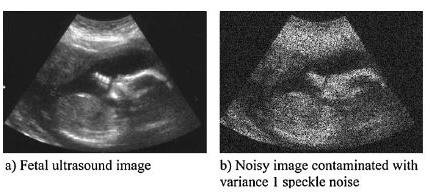
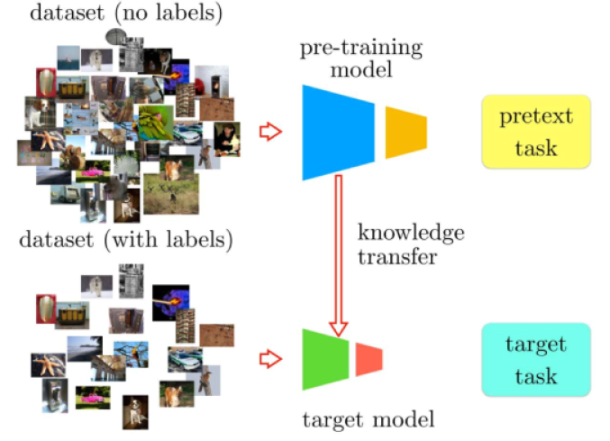
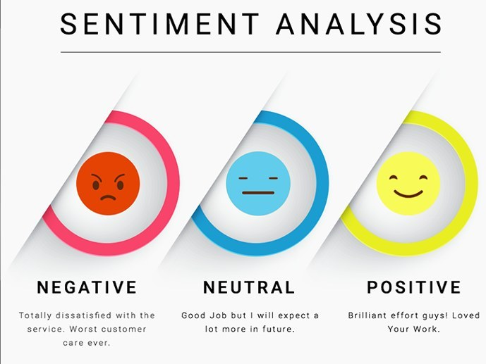
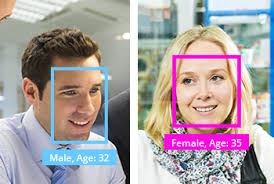

Projects

Robust Deep Learning Framework to address General Label Noise in Medical Imaging
- Designed a supervised contrastive learning framework by forming training curriculums with the help of class prototypes on colorectal cancer dataset
- Developing a novel iterative re-weighting scheme for robust deep learning classification under open set label noise for medical imaging data

Ultrasound Despeckling using Deep Learning
Objective : To develop a deep learning based method for despeckling of ultrasound images of prostate prior to MRI-Ultrasound fusion. Following work was carried out/ongoing to obtain clean images from noisy satellite image dataset as proxy to ultrasound images.
- Trained a closed loop dual regression net on low resolution noisy images with L1 loss to get PSNR of 22.9
- Conducted experiments with UNet and recovered clean images with MSE loss of 5.8e-3 and SSIM of 0.35 View Project

Few-shot Learning with Contrastive Self-supervision
- Trained a Prototypical Network using prototypical loss and contrastive SimCLR loss with episodal training
- Obtained a test accuracy of 52% with 5-shot learning on mini-Imagenet and a test accuracy of 98.1% with 5-way learning on Omniglot dataset

Self-supervision Techniques in Convolutional Neural Networks
- Conducted literature survey of self-supervision techniques for image representation learning
- Implemented pretext tasks including Inpainting, Jigsaw Puzzles using PyTorch with AlexNet as the backbone network, analysed on Paris StreetView and Caltech 101 datasets, respectively

Droplet Detection on Camera Lens
- Designed a deep learning model to detect whether the droplets in an image are distortion on the lens or are a part of the scene captured, with ResNet-18, VGG and DenseNet as various backbone architectures
- Experimented with Label Smoothing and Adversarial Learning obtained a test accuracy of 69.46% using Weighted Cross Entropy Loss on ResNet-18 backbone

Image Segmentation of Right Heart Ventricle
- Engineered Pixel-wise Segmentation of Right Ventricle of Heart in MRI Images from RVSC-MICCAI 2012 dataset with UNet Architecture as baseline model to get a Dice-score of 0.2761
- Performed ablation studies with hyperparameter tuning to achieve 0.24 Dice-score with Switching loss

Sentiment Analysis in NLP using LSTMs
- Implemented LSTM based sentiment classifier for IMDB movie database using GloVe word embedding
- Achieved a test accuracy of 87.51% for a 2 layer Bidirectional LSTM model with Binary Cross Entropy loss

Few-shot Image Segmentation with Prototypical Network
- Engineered a network to learn prototypes to perform segmentation using few-shot learning, with the feature alignment of the learnt prototypes to enhance generalizability when data available is less
- Obtained a mean IoU of 0.455 & 0.38 for 5-shot & 1-shot learning, respectively, on the PASCAL-VOC dataset

Emotion and Gender Recognition from Faces
- Trained a D-CNN based automatic Facial Emotion and Gender detection system on FER2013 dataset
- Extracted faces from self-generated images using Harr Cascade Classifiers, trained a D-CNN from scratch and exploited transfer learning by using VGG-16 to achieve a decisive accuracy of 75%

Generative Adversarial Networks for Image Synthesis
- Trained Deep Convolutional GAN with Binary Cross Entropy loss to generate images of MNIST digits
- Trained a Conditional Wasserstein GAN to create synthetic images of Fashion MNIST dataset

Imputing 3D human-pose from 2D coordinates
- Conducted ablation studies on Supervised and Weakly Supervised estimation of 3D human-pose from 2D skeletal coordinates using residual block Dense Neural Networks
- Obtained 0.209 as validation mse loss with supervised and 1.147 test mse loss with weakly supervised model

Employee Attrition Classification
- Classified on Employee Attrition Kaggle dataset by conducting data analysis and various mix of classifiers
- Obtained the best test accuracy of 90.09% on the test set with GradientBooster classifier

Support Vector Machine Classifier from scratch
- SVMs are a set of supervised learning methods used for classification, regression and outliers detection
- Implemented and trained SVM Classifier using gradient descent method and visualised it in Python
- Visualised the output decision boundary of the model trained on linearly separable and non-separable data